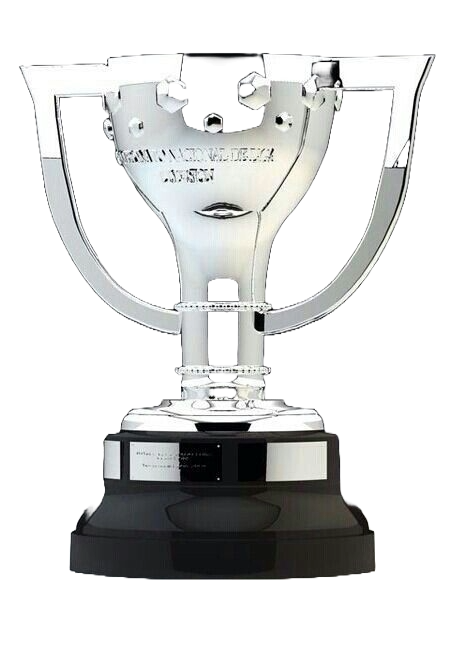
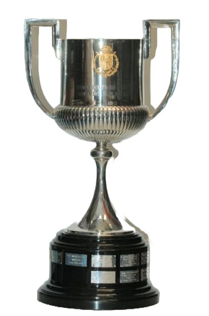
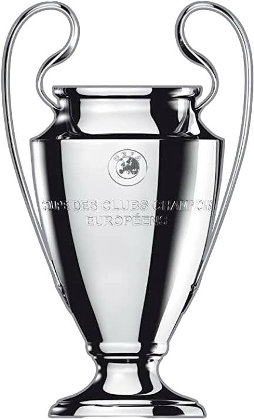
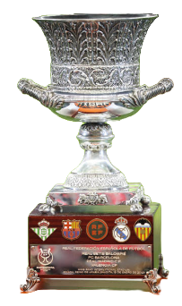
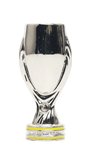

Welcome to Cules United
Immerse yourself in the world of FC Barcelona. Celebrate iconic legends, track real-time match fixtures, test your predictions in fan polls, and stay updated with breaking news. United by passion, bound by history — Visca el Barça!
Match Prediction Poll
Cast your vote for the upcoming fixture and see real-time fan percentages!
Fixtures & Results
Official match schedules and recent scores for FC Barcelona
Upcoming Matches
Loading upcoming fixtures...
Previous Matches
Loading past results...
Barcelona News Feed
Stay informed with the latest transfers, team reports, and club announcements
Fetching latest news...
Iconic Barça Legends
The football magicians who defined generations at Camp Nou
Trophy Cabinet
A legendary legacy written in gold and silver

La Liga
Years Won: 1929, 1945, 1948, 1949, 1952, 1953, 1959, 1960, 1974, 1985, 1991, 1992, 1993, 1994, 1998, 1999, 2005, 2006, 2009, 2010, 2011, 2013, 2015, 2016, 2018, 2019, 2023

Copa del Rey
Years Won: 1910, 1912, 1913, 1920, 1922, 1925, 1926, 1928, 1942, 1951, 1952, 1953, 1957, 1959, 1963, 1968, 1971, 1978, 1981, 1983, 1988, 1990, 1997, 1998, 2009, 2012, 2015, 2016, 2017, 2018, 2021

UEFA Champions League
Years Won: 1992, 2006, 2009, 2011, 2015

Supercopa de España
Years Won: 1983, 1991, 1992, 1994, 1996, 2005, 2006, 2009, 2010, 2011, 2013, 2016, 2018, 2023
FIFA Club World Cup
Years Won: 2009, 2011, 2015

UEFA Super Cup
Years Won: 1992, 1997, 2009, 2011, 2015
Official Club Anthem
Current Squad Roster
Meet the Blaugrana stars taking the pitch
Loading current squad...
Connect With FC Barcelona
Follow official club social channels with signature gradient effects